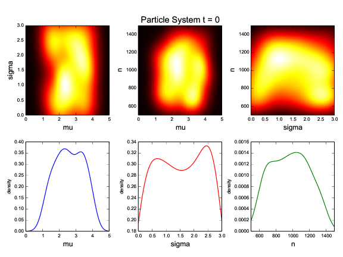
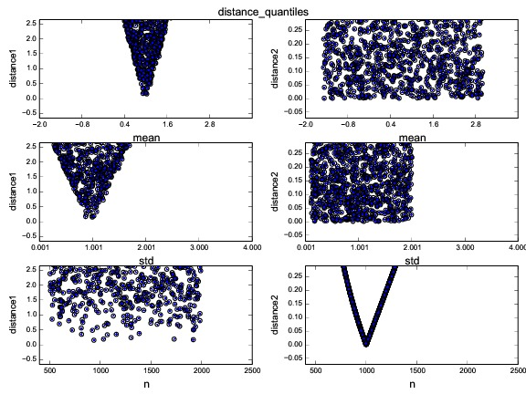

CosmoABC is a package which enables parameter inference using an Approximate Bayesian Computation (ABC) algorithm, as described in Ishida et al., 2015 [LINK].
The code was originally designed for cosmological parameter inference from galaxy clusters number counts based on Sunyaev-Zel’dovich measurements. In this context, the cosmological simulations were performed using the NumCosmo library .
Nevertheless, the user can easily take advantadge of the ABC sampler along with his/her own simulator, as well as test personalized prior distributions, summary statistics and distance functions.
The package can be installed using the PyPI and pip:
$ pip install CosmoABC
Or if the tarball or repository is downloaded, in the CosmoABC directory you can install and test it:
$ pyton setup.py install
You can run a few tests with:
$ test_ABC_algorithm.py
Warning
The above tests will generate a lot of output data file and a pdf file with their graphical representation. This was chosen to facilitate the identification of errors.
Make sure to run the tests in their own directory.
The test outputs a pdf file illustrating the evolution of the posterior.
Sample input in can be found in ~CosmoABC/examples. All example files mentioned in this section are available in that directory.
The user input file should contain all necessary variables for simulation as well as for the ABC sampler.
A simple example of user input file, using a simulator which takes 3 parameters as input (mean, std, n) from which we want to fit only two (mean, std), would look like this
path_to_obs = data.dat # path to observed data. If None a simulated data set
# will be generated on the fly and used in place of the observations
param_to_fit = mean n # parameters to fit
param_to_sim = mean std n # parameters needed for simulation
n_lim = 500 3000 # extreme limits for parametes
mean_lim = -2.0 4.0
n_prior_par = 500 2000 # parameters for prior distribution
mean_prior_par = -1.5 3.0
mean = 1.0 #fiducial parameters for simulation
std = 1.0
n = 1000
M = 100 # number of particle in each particle system
Mini = 200 # size of initial round
delta = 0.1 # convergence criteria
qthreshold = 0.75 # quantile in distance threshold used to define epsilon in the construction of subsequent particle system
file_root = example_1par_PS # root to output file name for subsequent particle systems
screen = 1 # rather (1) or not (0) to display intermediate steps on screen
ncores = 1 # number of cores
simulation_func = simulation # simulation function
prior_func = flat_prior flat_prior flat_prior # prior functions
distance_func = distance_quantiles # distance function
The most important ingredients in an ABC analysis are:
Built-in options for priors PDF are:
Built-in option for simulations is:
Built-in options for distance functions are:
Moreover, CosmoABC is also able to handdle user defined functions for all three elements. You will find example files in the corresponding directory which will help you taylor your functions for the ABC sampler.
Consider the <user_function_file> containing,
import numpy
def simulation( v ):
"""
Generates a Gaussian distributed catalog.
"""
l1 = numpy.random.normal( loc=v['mean'], scale=v['std'], size=v['n'] )
return numpy.atleast_2d( l1 ).T
def distance( dataset1, dataset2, Parameters ):
"""
Calculates distance between dataset1 and dataset2.
"""
t1 = abs( numpy.mean( dataset1 ) - numpy.mean( dataset2 ) )
t2 = abs( numpy.std( dataset1 ) - numpy.std( dataset2 ) )
return t1 + t2
The ABC sampler can be called from the command line:
$ run_ABC.py -i <user_input_file> -f <user_function_file>
This will run the algorithm until the convergence criteria is reached. A pdf file containing graphical representation of the results for each particle system is given as output.
If the achieved result is not satisfactory, or if for some reason the calculation was stopped before reaching the convergence criteria, it is possible to run the ABC sampler beginning from the last completed particle system N.
In case the convergence criteria was achieved but you wish to continue the run, remember to decrease the convergene criteria delta in the <user_input_file> before continuing.
From the command line:
$ continue_ABC.py -i <user_input_file> -f <user_function_file> -p N
At any time it is possible to plot the outcomes from N particle systems, whose calculations were completed, using:
$ plot_ABC.py -i <user_input_file> -p N
It is also possible to use it interactively.
from CosmoABC.priors import flat_prior
from CosmoABC.ABC_sampler import ABC
from CosmoABC.plots import plot_2D
import numpy as np
#user input file
filename = 'my_input.dat'
#read user input
Parameters = read_input(filename)
#initiate ABC sampler
sampler_ABC = ABC(params=Parameters)
#build first particle system
sys1 = sampler_ABC.BuildFirstPSystem()
#update particle system until convergence
sampler_ABC.fullABC()
#plot results
plot_2D( sampler_ABC.T, 'results.pdf' , params)
In order to reproduce the results of Ishida et al. 2015, first you need to make sure the NumCosmo library is running smoothly. Instructions for complete instalation and tests can be found at the NumCosmo website .
An example of input file for NumCosmo simulations is provided in the corresponding directory. Once the simulator is installed run the complete ABC sampler + NumCosmo cluster simulations from the command line:
$ run_ABC_NumCosmo.py -i <user_input_file>
This will run the complete analysis presented in Ishida et al., 2015.
Warning
This might take a while! Be patient!
Analogously to what is available for the user defined simulations, we can also continue a NumCosmo calculation from particle system N with:
$ continue_ABC_NumCosmo.py -i <user_input_file> -p N
If we want to run the NumCosmo simulation with a different prior or distance function, we should define it in a separated file and run:
$ run_ABC_NumCosmo.py -i <user_input_file> -f <user_function_file>
Plots are generated exactly as explained above for the user defined functions.
If you are using a personalized simulation/prior/distance, make sure that the chosen functions apply to the particular problem you are facing. Particularly, you need to be sure that the distance definition you adpoted yields increasingly larger distances for increasingly different catalogues.
CosmoABC has a built-in script which allows you to visually test the performances of your choices. In order to use it, prepare an appropriate user input and function files and, from the command line, do:
$ test_ABC_distance.py -i <user_input_file> -f <user_function_file> -o <output_filename>
Here, <output_filename> is where the distance behaviour for different set of parameter values will be plotted.
As always, the <user_input_file> must be provided. If you are using built-in CosmoABC functions, the -f option is not necessary and in case you forget to give an output filename, CosmoABC will ask you for it. It will also ask you to input the number of points to be drawn from the parameter space in order to construct a grid.
Here is an example from using the built-in tool to check the suitability of distance function:
$ test_ABC_distance.py -i user_input_file.dat -f user_function_file.dat
$ Distance between identical cataloges = [ 0.]
$ New parameter value = [ 0.41054026 0.6364732 -0.73338263]
$ Distance between observed and simulated data = [804.38711094885957]
$ Enter number of draws in parameter grid: 4
$ Particle index: 1
$ Particle index: 2
$ Particle index: 3
$ Particle index: 4
$ Figure containing distance results is stored in output.pdf
The output file will contain a plot like this:
The example above corresponds to a perfect distance definition. It has two independent outputs: the first one is able to constraint parameters mean and std while the second one constraints parameter n.
This is what one should aim for in constructing a distance function. How large a deviation from this is acceptable should be decided based on each particular problem and goal.
The complete documentation can be found in Read the Docs .